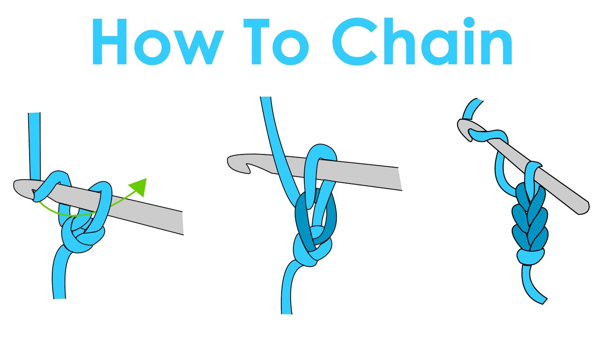
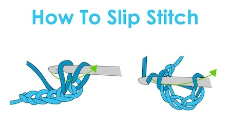
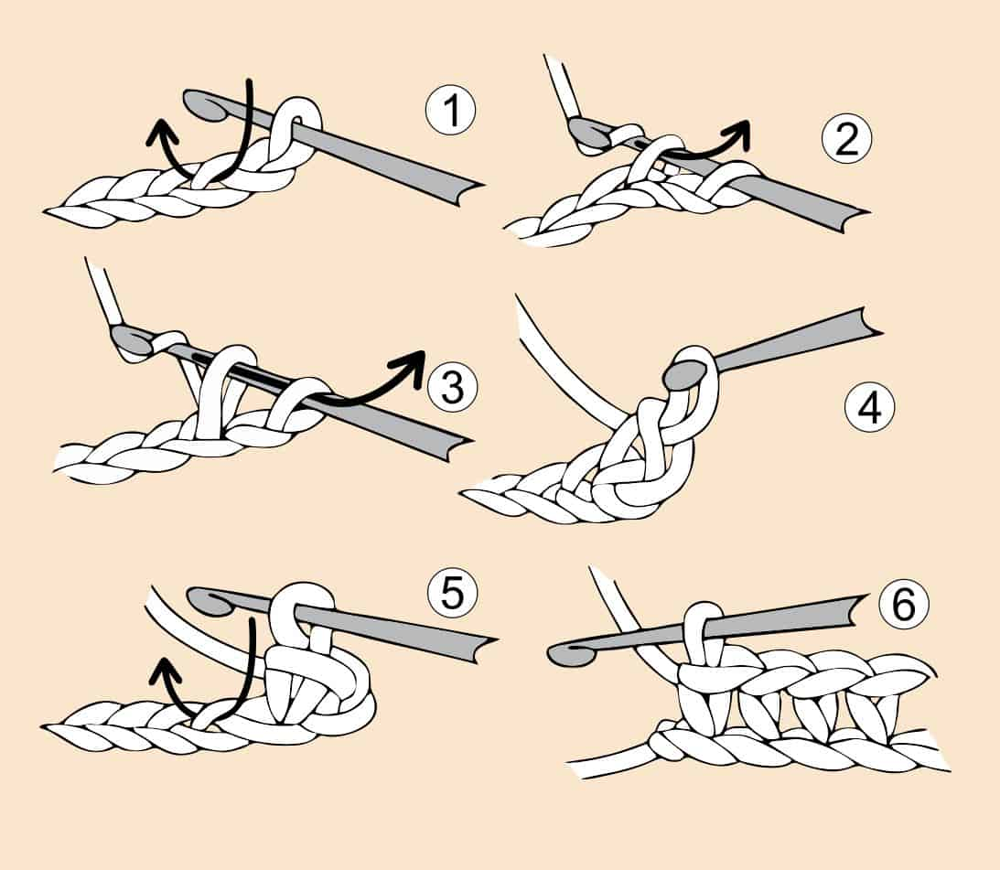
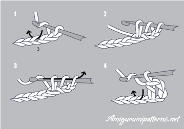
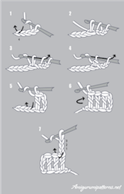
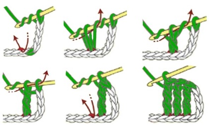

Crochet stitches are made by using a crochet hook. There are many different sizes that vary based on what yarn size you need, or how much space you want between the stitches. The most used stitches include the chain (ch), slip stitch (sl st), single crochet (sc), half double crochet (hdc), double crochet (dc), and treble (tr) stitch. There are more complicated stitches such as the moss stitch (linen stich), lemon peel stitch, shell stitch, popcorn stitch, camel stitch, and the crunch stitch. These are more difficult stitches so this website will not have a tutorial or page about them.
Here is an example and explanation of how to make the chain stitch. You would use the chain stitch as the begining of a project where you would crochet the rest of the project onto. This is the first row of your project if what your are crocheting is NOT a circle or a sphere.

Slip Stitches are most commonly used as a way to end a row in a magic circle, but are also used as a regular stich in someones project if they wanted their stitches to be shorter. The image on the left is a photo of someone doing a slip stitch NOT in a circle project and the image on the right is someone doing a slip stich in a circular project.

Single crochets are one of the most used stitches, as it is a stich that is not too long or too short. The stitch is the shortest out of this stich, the half-double crochet, half crochet, and treble crochet

Half-doulbe crochets are sitting between a single and double crochet in height and density.

Double crochets are taller than a single crochet and half double crochet, but smaller than a treble crochet. These are used in all types of projects and in my opinion one of the most fun stitches to do.

Treble crochets are the tallest stitches and are used to create open, lacy patterns, and to add height to projects.
